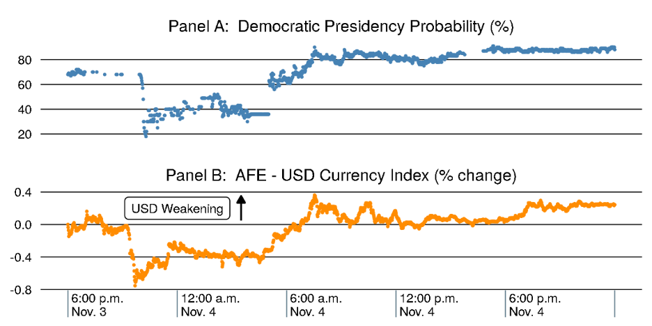
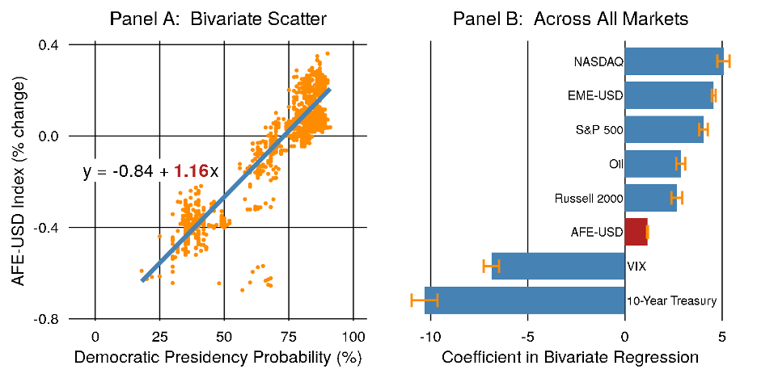
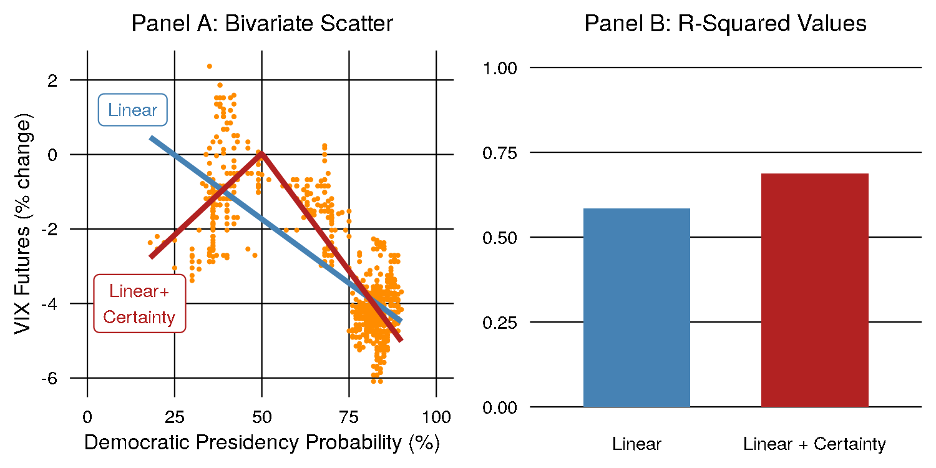
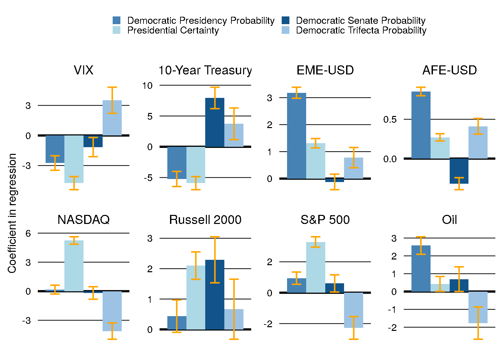
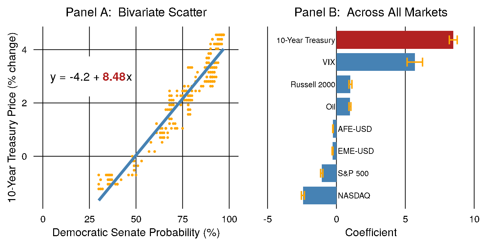

Minute-by-Minute: Financial Markets’ Reaction to the 2020 U.S. Election
Authors’ note: This short article was written June 2021, but never shared or published till July 3, 2024.
Introduction1
The 2020 U.S. presidential election garnered notable global attention from market participants, which was reflected, to some degree, in immediate changes in asset prices. Since financial markets respond rapidly to new and diverse information, it is difficult to disentangle any one event’s impact. However, the election offers a unique opportunity to overcome this identification obstacle: major results came in overnight, a sufficiently small window that concurrent events were limited in scope. Using a novel data source to get minutely estimates of probabilities for the presidential outcome, we examine the relationship between the 2020 election and various financial markets.
We find striking correlations between the presidential election outcome probability and major financial indicators, including USD currency pairs, bond prices, stock index futures, and a market volatility measure. The correlations are consistent with ‘risk-on’ behavior in markets, a term which describes investors moving toward riskier asset classes, as the election results became clearer. Further, we decompose the market reaction into a ‘reduction in uncertainty’ component and a ‘probability of a Democratic party presidency’ component. This decomposition reveals how markets reacted to the increasing certainty of the outcome as election results came in. Finally, we analyze the differing market reactions to the presidential election and the Senate election, including data from the unique Georgia runoffs, and demonstrate that bond prices were particularly sensitive to the probability of a combined Democratic Senate and Presidency.
Background and Data
Prediction markets offer a unique source of data on political and economic events. Betting on U.S. elections has been commonplace since at least the late 1800s (Rhode & Strumpf, 2004; Wolfers, 2009), and the advent of the internet in the 1990s introduced centralized ‘idea futures’ markets with many users (Hanson, 1996). These markets match two users to purchase a ‘yes’ and ‘no’ share for a contract (that is, “Will candidate X be elected?”) at a price ranging from 0 to 1. In an efficient market, the resulting price of a ‘yes’ share can be interpreted as the probability of the event ‘X’ happening. For example, if the price of a ‘yes’ share was $0.60 and a user predicted the true probability of the event to be 0.9, the user would buy a ‘yes’ share, making an expected profit of $0.30 per share. If many buyers expected the same probability of 0.9 the price of the ‘yes’ share would rise closer to $0.90. With enough users and enough information, the market price converges to the expected probability of the event occurring.
Since the popularization of these betting markets in the 1990s, there has been considerable research on their utility in predicting economic variables (Hahn & Tetlock, 2005; Snowberg et al., 2013), forecasting elections (Arrow et al., 2008; Reade & Vaughan Williams, 2019), and aiding corporate decision making (O’Leary, 2015; Plott & Chen, 2002; Spears et al., 2009). The data in these studies is often at the daily level, or even more infrequent. In this note, we take advantage of a novel source of minutely prediction market data from PredictIt. PredictIt is an online prediction market in the U.S., offering markets on various U.S. and global political events. For each election (i.e. party control of the Senate and Presidency), we get minutely data on the market ‘yes’ and ‘no’ prices, and we take the most recent trade to arrive at the market-implied event probability.
To isolate financial markets’ reaction to the election, we narrow the time range to election night (November 3, 2020) and the following day. Over the course of the night, there was a remarkable shift in the perceived probability of either the Democratic or Republican candidate winning the presidential election. The Democratic candidate’s probability of winning the election (Democratic Presidency Probability) ranged from about 20% to 90% over the course of 30 hours, providing enough variation to find statistically significant relationships. As shown in Panel A of Figure 1, at 6:00 p.m. on November 3, the Democratic candidate’s probability of winning the presidency was close to 70%. As results were published, the probability fell all the way to 20%, before steadily rebounding late into the night.

Note: Observations are by the minute. The Democratic Presidency Probability shows the latest traded price (which can be interpreted as a probability) from PredictIt. The AFE-USD currency index is represented as a percent change from the value before 6:00 p.m. on November 3rd, 2020, with higher values denoting the depreciation of the dollar.
Source: PredictIt, Bloomberg.
These large shifts reflect two factors: (1) the variable times at which states reported results, and (2) the realization of a large polling miss.2 Some states report most of their results early in the night while others do not release comprehensive counts until late into the night or even the following day. This trickle of information provides ample time for markets to adjust their perceptions of the likeliest outcomes of the election. In addition, it became obvious that expectations about the election outcome, which strongly favored Democrats based on polls, had been inaccurate. The actual election results had a much closer margin than expected, which forced investors to recalibrate throughout the night.
Among the important financial markets that clearly react to the events of the election, Panel B of Figure 1 plots an AFE-USD currency index (AFE-USD Index) as a percent change from its price prior to 6:00 p.m. on November 3.3 Currency markets are global in nature and react to major real world events, and unlike equity markets, they trade overnight, so they are well-positioned to react to information like election results. The AFE-USD Index clearly reacts to the events of the November presidential election, with an extremely high correlation of 0.92 between the two series.
Initial Market Reaction
In Panel A of Figure 2, we plot the Democratic Presidency Probability against the change in the AFE-USD index across the same time period as above, 6pm November 3rd through November 4th. The resulting statistically significant coefficient—highlighted in red—of a simple linear regression, quantifies the market’s pricing of a Democratic over a Republican victory in the race for the presidency, in this case implying a depreciation of just over 1% in the price of the dollar.
Using the same time window of minutely data, we can expand our scope to a host of markets that are traded overnight: futures for the S&P 500 index, NASDAQ, and Russell 2000 stock market indexes, the EME-USD Index, future prices for oil (measured by WTI Crude) and the VIX stock market volatility index, and the yield of 10-year treasury bonds. Panel B of Figure 2 plots the resulting coefficients of a linear regression between each of these financial markets and the Democratic Presidency Probability, with a 95% confidence interval shown in bars around each estimate. Every relationship is statistically significant, and only the VIX and the 10-Year Treasury yield4 have a negative coefficient with the Democratic Presidency Probability.

Note: In Panel A, each point represents one observation of the last traded price (probability) from PredictIt and the percent change in the AFE-USD currency index since 6:00 p.m. November 3rd, with higher values denoting the depreciation of the dollar. The fitted line is a simple linear regression shown in the upper left. In Panel B, each bar shows the coefficient between a simple linear regression of one of the financial markets and the Democratic Presidency Probability, with a 95% confidence interval around the estimate.
Source: PredictIt, Bloomberg, authors’ calculations.
There are several potential explanations for the observed co-movements between asset prices and the changing presidency probability. One possibility is an increasing “risk-on” sentiment, where investors are more willing to own riskier assets in exchange for higher expected return. Evidence for such a rotation is in the declining VIX futures, the EME currencies strengthening more than those of AFEs, and the tech-focused NASDAQ index being the most positively correlated of any of the assets in our sample. However, a countervailing piece of evidence against such “risk-on” behavior is the negative coefficient in the 10-year treasury yield. A typical “risk-on” rotation would involve an increase in treasury yields as investors sell off these extremely safe assets. Instead, we observe a negative correlation between treasury yields and the Democratic presidency probability.
A Reduction in Uncertainty
It is possible that markets were not only pricing in a Democratic or Republican victory for the presidency, but also the uncertainty of the election outcome. In face of a large, uncertain event, financial markets may respond with a “risk-off” stance, putting investments into safer assets until the uncertainty is concluded. After the event has resolved, markets then take on more risk and lower their expectation of future volatility.
This pricing-in of uncertainty is clear in the VIX futures price, plotted against the Democratic Presidency Probability in Panel A of Figure 3. The simple linear regression, in blue, has a fairly strong fit to the data, as demonstrated by its R-squared value of about 0.6, plotted in Panel B. However, by adding an additional variable capturing the certainty of the election outcome (calculated as the absolute value of the distance from 50-50 odds), the model fit of a specification we label “Linear + Certainty” is even higher. The strength of the relationship is also visually convincing in Panel A of Figure 3, with the “Linear + Certainty” model plotted with the red line. This suggests that to some extent, market participants were responding to the level of certainty of the presidential outcome instead of the outcome itself.

Note: In Panel A, each point represents one observation of the last traded price (probability) from PredictIt and the percent change in price of the VIX futures since 6:00 p.m. November 3rd. The fitted line in blue is a simple linear regression and the line in red has an additional term, the absolute value of the distance from 50-50 odds. In Panel B, each bar shows the R-Squared of the two models fitted in Panel A.
Source: PredictIt, Bloomberg, authors’ calculations.
Controlling for Other Elections
Earlier we noted that by narrowing the time window to election night, we were reducing the probability that other events could be affecting financial markets. Our analysis so far, however, abstracts from a host of other elections that take place at the same time as the U.S. presidential election. There are two other crucial outcomes: control of the Senate and of the House of Representatives. Democrats were the favorites to win control of the House, and the probability of that outcome did not move much over the course of the night (ranging from 88% to 99%). Control of the Senate, on the other hand, moved substantially, favoring Democrats heading into election night (about 70%) and completely switching by the end of the following day with a Republican win probable (about 80%). An additional market on PredictIt asked what the probability was of a Democratic “Trifecta” across the federal government, with control of the Senate, House, and Presidency. The resulting coefficients of regressing various financial markets on these four variables—Democratic Presidency Probability, Presidential Certainty, Democratic Senate Probability, and Democratic Trifecta Probability—are shown in Figure 4, which paints the most complete picture of how the various elections of 2020 were priced in by markets.5

Note: Each panel shows four bars representing the coefficients on a multivariable regression between the four prediction market variables and each of the financial variables. The yellow error bars show the 95% confidence interval around each estimate.
Source: PredictIt, Bloomberg, authors’ calculations.
Looking first at the VIX, we can see that the coefficient on Presidential Certainty captures the largest amount of movement in the financial market dependent variables, with the Democratic Presidency Probability still having a large negative effect, and the Democratic Trifecta Probability associated with an increase in the VIX. It is likely that the shock effect of one party controlling all three institutions, which was a surprise outcome, led to expectations of responsive volatility in equity markets in the near term. In contrast, the 10-Year Treasury shows a decrease in yield from both of the Presidential variables (as is consistent with the results in Figure 2), but it has an implied increase in yield from the Democratic Senate and Trifecta Probabilities. This is a possible sign that markets interpreted a Democratic Senate (and even more so a Trifecta) as a precursor of a larger round of stimulus owing to a unified government being more easily able to pass spending legislation.
In currency markets, the AFE-USD currency index shows the relatively lowest absolute movement in response to the election, while the EME-USD currency index has one of the strongest absolute responses. As before, there is a much larger implied appreciation of EME currencies compared to AFE currencies for an increase in both Democratic Presidential Probability and Presidential Certainty, pointing to “risk-on” behavior. Both currency indexes have a positive and significant coefficient on Democratic Trifecta Probability, and the AFE index has a significant negative coefficient on Democratic Senate Probability.
The stock market index futures exhibit different behaviors, with the Russell 2000 increasing in response to each of the variables, but especially to the probability of a Democratic Senate as well as Presidential Certainty. The NASDAQ, on the other hand, has a large implied increase on Presidential Certainty, but is negatively correlated with Democratic Trifecta Probability. The S&P 500 shows similar reactions to the NASDAQ but also has significant and positive (though small) coefficients on Democratic Presidency Probability and Democratic Senate Probability.
Oil responded most positively to the Democratic Presidency Probability and has one of the smallest coefficients with Presidential Certainty, suggesting that the market is interpreting some potential policy differences between the two presidential outcomes.
The Georgia Runoffs and Control of the Senate
The November election left the Senate split with 50 Republican seats to 48 for the Democrats.6 The final two seats were both in Georgia as no candidate won 50% of the vote, triggering automatic runoffs that would decide control of the Senate, with Democrats only needing 50 seats to hold a majority (using the Vice President’s vote to break ties).
We repeat the analysis above, focusing instead on January 5th from 6:00 p.m. to midnight, as the final results of the election came in. This time there truly was only one election outcome (two races) and the result was unexpected, causing a steady shift in the odds as the votes were tallied. In Panel A, the strong relationship between the Democratic Senate Probability and the 10-Year Treasury Price is apparent. The strong increase in the VIX paints a picture of the surprise outcome introducing volatility into the market as prices adjust. In addition, the movements may reveal an expectation of a larger stimulus package because of the prospect of a unified government being able to pass bills more easily (consistent with results in Figure 4). Most notably, the implied increase in the 10-Year Treasury is quite significant and aligns well with this story, on the textbook macroeconomic assumption that higher government spending leads to higher future interest rates. The opposite reactions of the Russell 2000 compared to the S&P 500 and NASDAQ are also revealing, again showing the importance of this political event to the financial markets.

Note: In Panel A, each point represents one observation of the last traded price (probability) from PredictIt and the percent change in price of the 10-Year Treasury since 6:00 p.m. January 5th. The fitted line in blue is a simple linear regression shown in the upper left. In Panel B, each bar shows the coefficient between a simple linear regression of one of the financial markets and the Democratic Senate Probability, with a 95% confidence interval around the estimate.
Source: PredictIt, Bloomberg, authors’ calculations.
Conclusion
We use a novel minutely data set to provide insight into the precise relationship between financial markets and the changes in 2020 election result probabilities. While we cannot identify the exact reasons for any of the market movements throughout the course of the election, the striking correlations show that prediction markets and financial markets are indeed tightly interlinked. This result shows the importance of further studying the utility of prediction markets to make economic and political forecasts.
References
Arrow, K. J., Forsythe, R., Gorham, M., Hahn, R., Hanson, R., Ledyard, J. O., Levmore, S., Litan, R., Milgrom, P., Nelson, F. D., Neumann, G. R., Ottaviani, M., Schelling, T. C., Shiller, R. J., Smith, V. L., Snowberg, E., Sunstein, C. R., Tetlock, P. C., Tetlock, P. E., … Zitzewitz, E. (2008). The Promise of Prediction Markets. Science, 320(5878), 877–878. https://doi.org/10.1126/science.1157679
Bloomberg Finance LP. Bloomberg Terminals (Open, Anywhere, and Disaster Recovery Licenses).
Hahn, R. W., & Tetlock, P. C. (2005). Using Information Markets to Improve Public Decision Making. Harvard Journal of Law & Public Policy, 29, 213.
Hanson, R. (1996, June 9). Idea Futures—The Concept. https://mason.gmu.edu/~rhanson/ideafutures.html
O’Leary, D. E. (2015). User participation in a corporate prediction market. Decision Support Systems, 78, 28–38. https://doi.org/10.1016/j.dss.2015.07.004
Plott, C. R., & Chen, K.-Y. (2002, March). Information Aggregation Mechanisms: Concept, Design and Implementation for a Sales Forecasting Problem (Report or Paper No. 1131). California Institute of Technology. https://resolver.caltech.edu/CaltechAUTHORS:20140317-135547085
PredictIt, Market Data via API, https://www.predictit.org/api/marketdata/all/
Reade, J. J., & Vaughan Williams, L. (2019). Polls to probabilities: Comparing prediction markets and opinion polls. International Journal of Forecasting, 35(1), 336–350. https://doi.org/10.1016/j.ijforecast.2018.04.001
Rhode, P. W., & Strumpf, K. S. (2004). Historical Presidential Betting Markets. Journal of Economic Perspectives, 18(2), 127–141. https://doi.org/10.1257/0895330041371277
Silver, N. (2021, March 25). The Death Of Polling Is Greatly Exaggerated. FiveThirtyEight. https://fivethirtyeight.com/features/the-death-of-polling-is-greatly-exaggerated/
Snowberg, E., Wolfers, J., & Zitzewitz, E. (2013). Chapter 11—Prediction Markets for Economic Forecasting. In G. Elliott & A. Timmermann (Eds.), Handbook of Economic Forecasting (Vol. 2, pp. 657–687). Elsevier. https://doi.org/10.1016/B978-0-444-53683-9.00011-6
Spears, B., LaComb, C., Interrante, J., Barnett, J., & Senturk-Dogonaksoy, D. (2009). Examining Trader Behavior in Idea Markets: An Implementation of GE’s Imagination Markets. Journal of Prediction Markets, 3(1), 17–39.
von Beschwitz, Bastian, Christopher G. Collins, and Deepa D. Datta (2019). “Revisions to the Federal Reserve Dollar Indexes,” FEDS Notes. Washington: Board of Governors of the Federal Reserve System, January 2019., https://doi.org/10.17016/2573-2129.48.
Wolfers, J. (2009). Prediction Markets: The Collective Knowledge of Market Participants. Cfa Institute Conference Proceedings Quarterly, 26, 37–44. https://doi.org/10.2469/cp.v26.n2.2
Footnotes
We thank Ricardo Correa and Juan M. Londono for their useful comments. All errors remain our own.↩︎
The weighted-average error of polls within three weeks of the 2020 election was 4.2 percentage points in favor of the Democratic party candidate, compared to a historical average of 1.3 percentage points in favor of the Democratic party candidate (Silver, 2021).↩︎
Our AFE-USD Index measures the exchange rate of the dollar against a basket of major advanced foreign economy currencies (CAD, CHF, EUR, GBP, JPY, and SEK), borrowing methodology from the Federal Reserve Dollar Indexes (von Beschwitz et al., 2019). Likewise, our EME-USD Index does the same using emerging market economy currencies (CNY, HKD, MXN, SGD, and THB). Currencies were selected for inclusion in the indexes based on the availability of minutely price data on election night. An increase in the index indicates a depreciation of the dollar.↩︎
Throughout this note, Treasury bond movements are quoted in yields (bond yields rise as prices fall.)↩︎
For the purposes of our analysis, the inclusion of the Trifecta is similar to adding an interaction term between the Democratic Presidency and Democratic Senate probabilities.↩︎
This includes the two independents who caucus with the Democrats in the Democratic total.↩︎
Citation
@misc{dehaven2024,
author = {DeHaven, Matthew and Firestone, Hannah and Webster, Chris},
title = {Minute-by-Minute: {Financial} {Markets’} {Reaction} to the
2020 {U.S.} {Election}},
number = {arXiv:2407.03527},
date = {2024-07-03},
url = {https://arxiv.org/abs/2407.03527},
langid = {en}
}